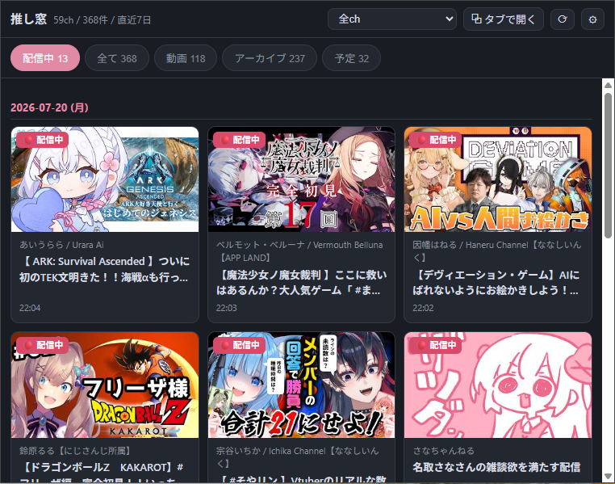
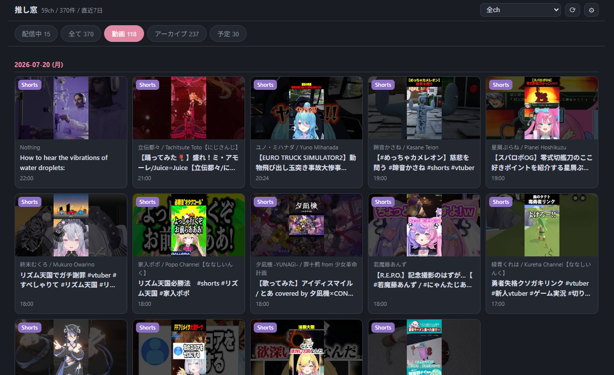
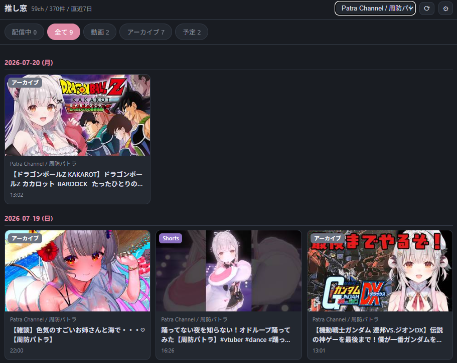
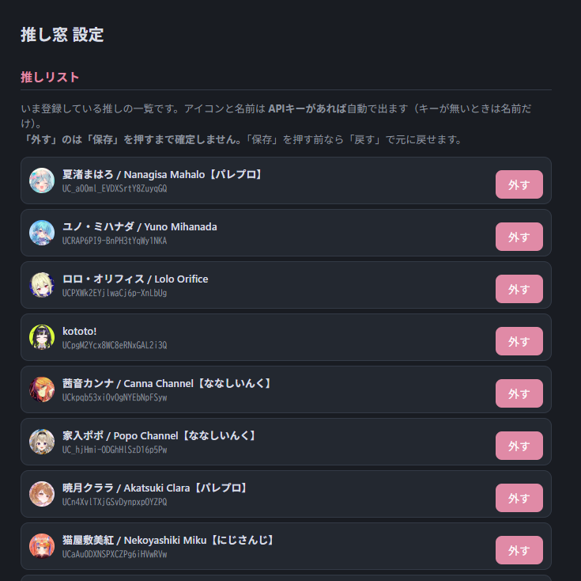

Chrome ウェブストアで公開中
推し窓
推しのチャンネルの動画、ライブ配信、配信予定を横断表示するChrome拡張です。
種類別のタブとチャンネル絞り込みで、見たいコンテンツをすぐに探せます。
- 種類
- Chrome拡張機能
- 公開状況
- Chrome ウェブストアで公開中
- 技術
- Manifest V3 / Vanilla JavaScript / YouTube Data API / RSS Feed / chrome.storage

画面


現在ライブ配信しているチャンネルだけを表示します。
デフォルトでこのタブが選択されています。


Shortsを含むアップロード動画を公開時刻順に表示します。


選択したチャンネルの投稿のみを一覧で表示します。


APIキーの登録と推しリストの管理を行います。
できること
- 新着の横断表示
推しリストに登録した全チャンネルの投稿を直近7日間ぶん日付ごとにまとめて表示します。
- 種類別タブ
配信中、すべて、動画、アーカイブ、予定のタブから見たい種類だけを選べます。
- チャンネル絞り込み
特定のチャンネルを選び、そのチャンネルの投稿だけに絞って確認できます。
- 視聴可能時刻で整列
配信とアーカイブは配信開始時刻、動画とShortsは公開時刻を基準に並べます（配信終了時間は一般的には不定で基準にしづらいため）。
開始時刻を取得できない場合は公開時刻で代用します。
- APIキーなしでも利用可能
公開RSSを使い、APIキーを登録しなくても新着一覧を表示できます。
詳しい種類判定はAPIキー登録後に利用できます。
- 通常のタブでも表示
ポップアップだけでなく通常のタブとして開き、広い画面で新着を確認することもできます。